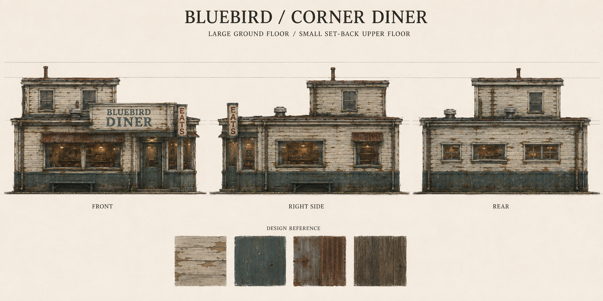
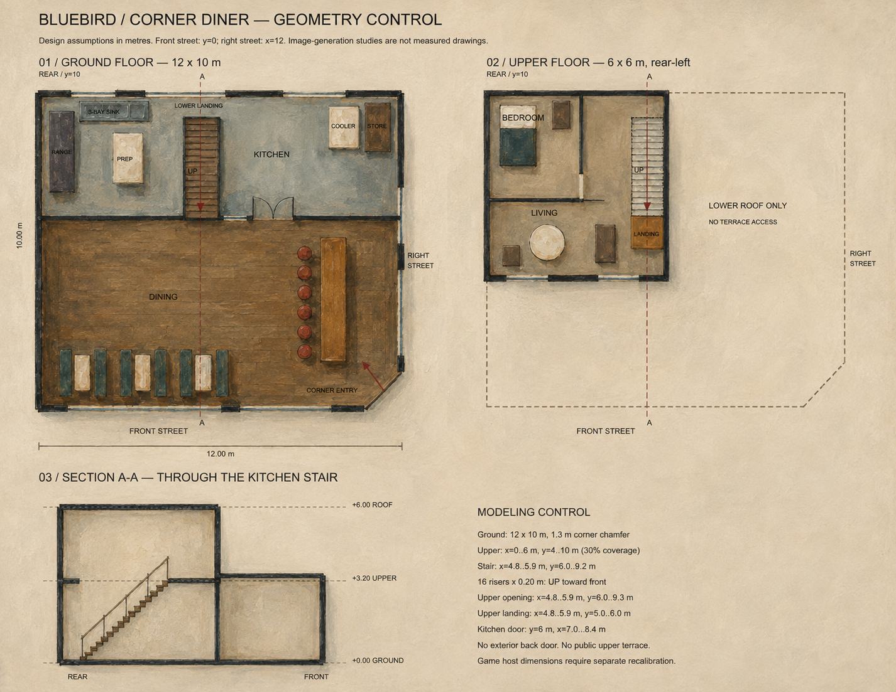
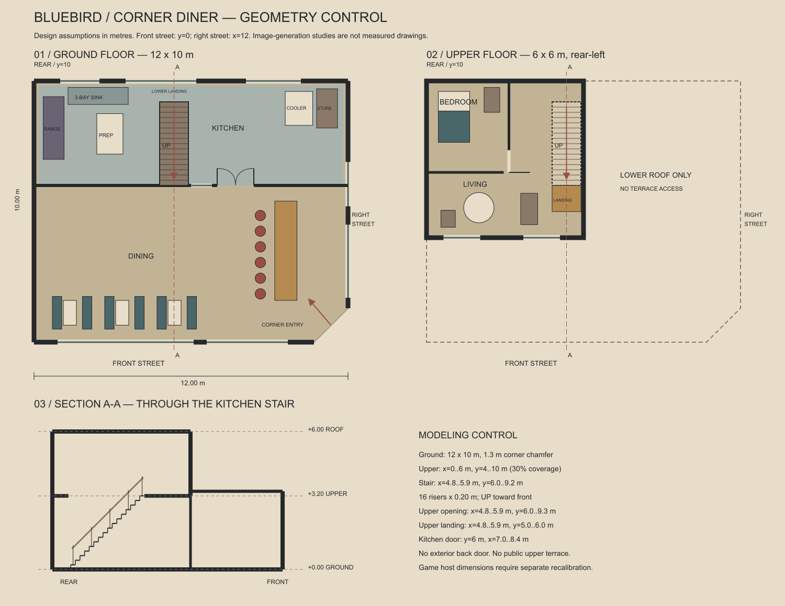
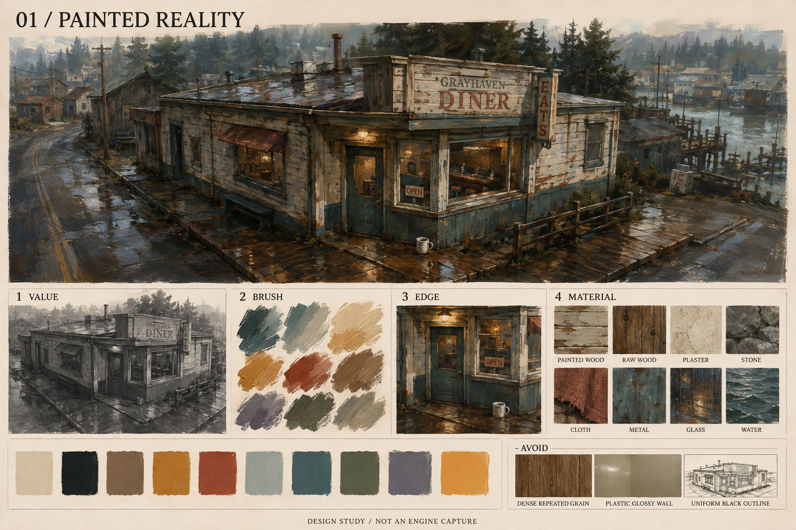

BLUEBIRD / DESIGN V3 · 建模前设计图一楼展开，二楼退台，入口落在街角。
以你提供的油画餐厅为主参考：骨白旧木、褪色蓝绿、锈褐雨棚、低屋顶和温暖窗光。建议一楼 12 × 10 m，二楼 6 × 6 m，位于后左侧；尺寸是本版设计假设。

01 · 外观与材料参考。各视图的精确尺度以结构底图统一。

02 · 内部色稿。楼梯位于后部厨房，二楼仅覆盖后左侧。

03 · 可编辑 SVG / 布局数据。建模以此控制墙体、楼梯、楼板洞口与标高。

主视觉参考 · 用户提供
当前为设计图阶段。新的三维模型、游戏尺度衔接和实时油画效果尚未完成；旧版模型不代表本版外观。